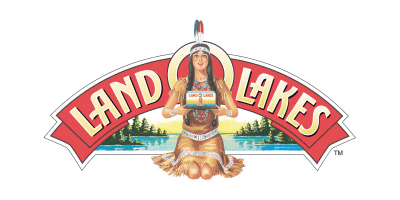
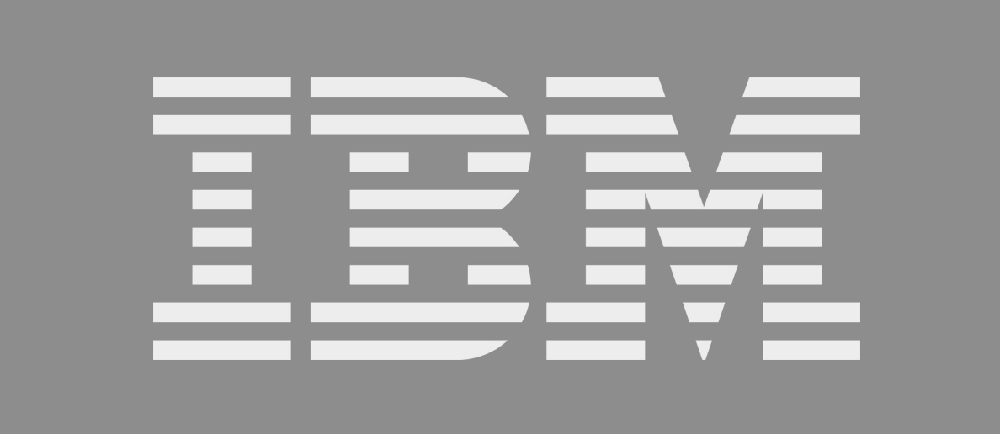
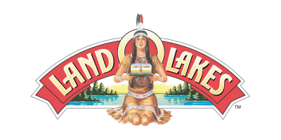
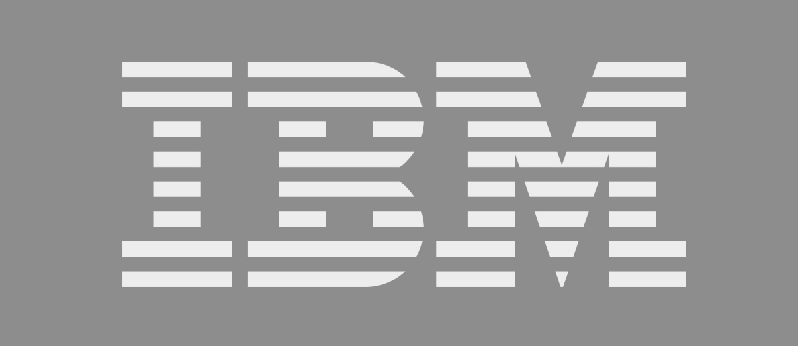

Enabling IT to function the way it's meant to
If you are here, it's likely your IT organization isn't operating at exceptional levels.
Do you have an IT product or service that you are struggling to take to market? Perhaps you are in a situation where releases are consistently late or disconnected from business needs and the moral of IT staff is low? Perhaps the organization needs to grow and mature so more products or services are released, but adding staff seems to reduce productivity? Another common situation with IT is key energetic figures that held the organization together when it was smaller are either gone or overtaxed with the organization's current size and scope. Perhaps you simply seek experienced consultation in IT Management, Architecture, Development, Security, or Performance.
These are the types of situations that truly test an IT organization and it can be a great help to have someone on-hand who understands the reality and complexity of IT. Robert's approach is holistic providing attention where it is needed most to improve IT results whether it is leadership, innovation, process optimization, architecture, or development technology changes.
Whether you are looking for a 1-week assessement of your IT environment or a 6-month transformation of an IT project or organization, contact Robert to discuss a potential engagement.
Meet Robert
Robert Ross Peterson has seen over 40 IT environments in areas including startups, mobile, e-commerce, financial, healthcare, non-profit, utility, and public service.
Robert earned his stripes as an IT Consultant at IBM, co-founded Parseix.com, has managed several IT teams, and today he has a passion for helping IT organizations thrive.
He has experience in operations of industrial-grade five nine high availablility IT environments, successful shipping of large releases, and expanding market share using IT innovation coupled with rapid prototyping.
Robert holds a MS in Computer Engineering & MS in Meditation, 58 US technology patents, has authored several IT books, and is Kanban methodology certified.
TESTIMONIALS
Robert is such an awesome rockstar, it's unbelievable. I can't recommend him enough. Pay him all the money you have ~la! — Non-Profit CEO
Robert brings a breadth of skills to his clients. He excels at helping them chart a path to their desired outcome and understand the technology tradeoffs for achieving those goals. He can readily map the solution to a broad technology base to ensure clients are building an optimal solution. He is also technically hands on and can quickly prove out concepts with rapid prototyping. I highly recommend him to teams that look to be more agile or transform their technology infrastructure. — IBM Vice President
Robert is such an awesome rockstar, it's unbelievable. I can't recommend him enough. Pay him all the money you have ~la! — University Chancellor
``
Consulting and contracts on your terms
Services offered internationally are as follows.
- 1-2 week IT assessements resulting in documented findings in report or presentation format.
Services offered in the continental United States are as follows.
- Consulting engagements or contract positions from 1-6 months.
- Targeted leadership of IT groups in support of organizational growth, critial situations, and the like.
- Coaching of IT groups using Agile or Kanban methodologies to improve results.
- Assistance with IT architecture, product-to-market, production scalability, security, or performance.
All engagements are scoped with a Statement of Work. An example follows.

Contact
Robert works with clients internationally and his availability is not guaranteed. To work with him the first step is usually a free consultation to discuss engagement possibilities and determine if Robert is a "good fit."
SCHEDULE MEETING
Check Robert's availability and schedule an initial consultation below.
Alternatively, he may be reached by phone at +1-413-695-5553 or by email at info@avnielconsulting.com